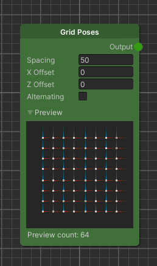
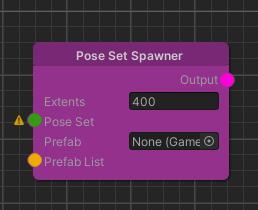

Graph Node Overview
Map Sources
Creates a map (of float values) of the environment. It can be used to generate terrain if used as a height map, to filter spawned objects, or as an input for several other nodes.
Info: The maps are visualized in a black/white/blue manner. White is always the maximum value (does not have to be “1”), and black always represents the minimum value (does not have to be “0”). Shades of blue are used for negative values.
All these nodes generate “Map” data types:
Constant Value
Outputs a map with a constant value.
Constant One
Outputs a map with only “1”s.
Constant Texture
Outputs a defined texture as a map.
Constant Zero
Outputs a map with only “0”s.
Terrain Elevation
The height map of the earth surface retrieved from satellite images. Note that neither tunnels nor bridges are contained. Additionally, the map is not detailed enough to foresee the vehicle’s altitude.
Perlin Noise
Outputs a perlin noise.
Example Use Case: Adding synthetic variety by either adding or multiplying perlin noise to another image.
Pose Set Rasterizer
This node transforms a “pose set” into a map. This node is very helpful for visualization/preview purposes in the graph.
Example Use Case: Using the distance transform to get the distances to the closest pose.
OSM Geometry Rasterizer
Returns a “black and white” image of where the queried entities are. The results can either be drawn filled or as an outline.
Info: Geometry that is not closed (roads) but drawn with the filled style will result in odd looking shapes.
Example Use Case: Using the park query to only allow spawning of trees in this permitted area and feeding it into a grass texture layer.
Road Network Mask
➞ Visit the in depth page
Blend Texture At Pose Heights
Blends a given texture at the positions of a set of poses with the input map and returns the blended map. Height and Alpha channel can be chosen from the source texture. A scale factor is multiplied with the xz-scale as well the height of the blended pattern.
Note: The Height channel is added to the poses' y-positions and then blended with the input map's height data.
Example Use Case: Used to blend patterns from a texture with an existing terrain map. The texture can incorporate a channel for actual height values as well as a channel for alpha blending values.
Map Modifiers
Map operators are a set of nodes used to modify “Maps” in different ways.
Blur
Adds blur to the “black and white” image.
Example Use Case: Smoothing edges to let values fade into each other.
Convolute
A custom convolution. https://en.wikipedia.org/wiki/Convolution
Example Use Case: Using a Sobel filter kernel to highlight edges. https://en.wikipedia.org/wiki/Sobel_operator
Distance Transform

➞ Visit the in depth page
Math
Feel free to explore the possibilities!
Remap

➞ Visit the in depth page
Normal Projection Evaluator
Computes the dot-product between the given normal and the derived input image at every position.
Example Use Case: Evaluating how steep the slope of a hill is in order to, say, put trees on top and stones at the side of the hill.
Scale
Scales the map values by a given factor.
Pose Set Sources
Pose sets define a group of positions. They are usually used as a preprocessing step to spawners as there are several nodes to modify the poses before spawning objects based on a pose set.
All these nodes generate “PoseSet” data types:
Grid Poses

The Grid Poses node generates an even grid of poses.
OSM Poses

➞ Visit the in depth page
Road Network Poses
➞ Visit the in depth page
Pose Set Modifiers
There are a variety of nodes to process the generated pose sets.
Add Random Rotation
Randomly rotates the generated poses.
Add Random Translation
Randomly translates/shifts the generated poses.
Remove By Map
Uses a map to remove/mask certain poses.
Example Use Case: You want to spawn coins on the road, but based on the road width, you want to have more of them. Then you can combine it with the Grid Positions node like in the example above.
Remove Close Neighbours
Removes poses that are closer than the defined distance.
Example Use Case: Cleaning up your poses to make them less dense. RotateTowardsGradientDirection
Rotates poses depending on the gradient.
Example Use Case: Rotating spawned objects toward a road.
Translate Along Gradient
Move poses in the direction provided by a gradient.
Example Use Case: Moving spawned objects away from the road.
Set Heights By Map
➞ Visit the in depth page
Unify Poses
The Unify Poses node fuses multiple pose sets to one.
Example Use Case: Cleaning up / simplifying your graph.
Portals
➞ Visit the in depth page
Spawners
As the name indicates, spawners are the node type to spawn prefabs and game objects in your scene based on different rules.
OSM Building Spawner
This spawner is dedicated to spawning buildings on places where buildings also exist in the real world. It uses the outline of a building and creates a 3D mesh with the chosen material applied.
Pose Set Spawner

➞ Visit the in depth page
Road Network Spawner
This spawner spawns objects on all roads (note: roads can also be pedestrian walkways or similar).
Speciality for Road Network Spawner – Geometry Bending By adding the component RouteGeometryBender to a prefab, it is possible to bend the geometry with the route spline.
As the bending target, a MeshCollider and/or MeshFilter can be added to the component. The bending resolution determines the sample count on the spline. In order to get a satisfying result, an evenly tessellated mesh with a sufficient resolution should be provided.
Example Use Case: Generating tunnels or trenches to drive or fly through spaces in VR.
Grid Spawner
➞ Visit the in depth page
Unconstrained Grid Spawner
Allows spawning objects in a grid, like the Grid Spawner, but is not restricted by the Extents of the Elastic Scene Generator.
Note
Due to the Spawner being able to spawn objects in areas without Map data, the Spawner does not allow graph data injection.
OSM Spawner
The OSMSpawner spawns objects based on OSM/Overpass queries.
Collision Solver
To keep objects from intersecting with each other, you can add a CollisionSolver component to the prefab of the game object that you want to place.
Note that intersections can be detected only with game objects that have some sort of collider attached to them. The terrain itself is excluded from all intersections. The physics engine then takes care of shifting objects over a certain number of iterations.
Elastic Scene Definition
➞ Visit the in depth page
Texture Layer
➞ Visit the in depth page
Data Provider Nodes
Data Provider nodes allow the user to select one element of a list using different approaches.
Currently the ElasticSDK offers the following nodes.
Pick Prefab Randomly
➞ Visit the in depth page
Pick Prefab by Map
➞ Visit the in depth page